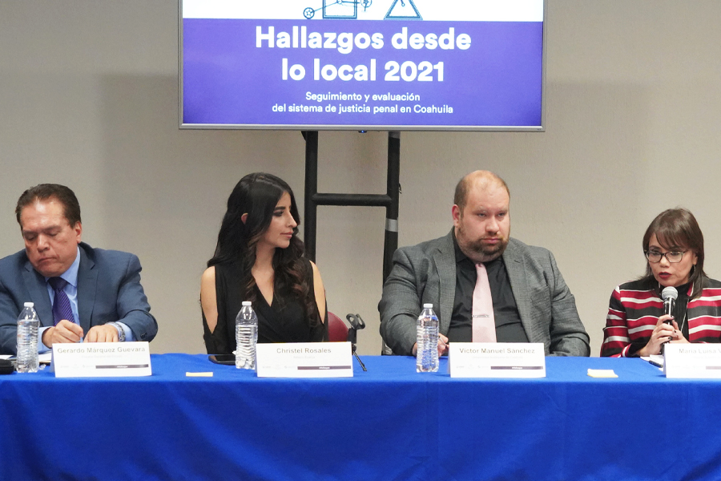
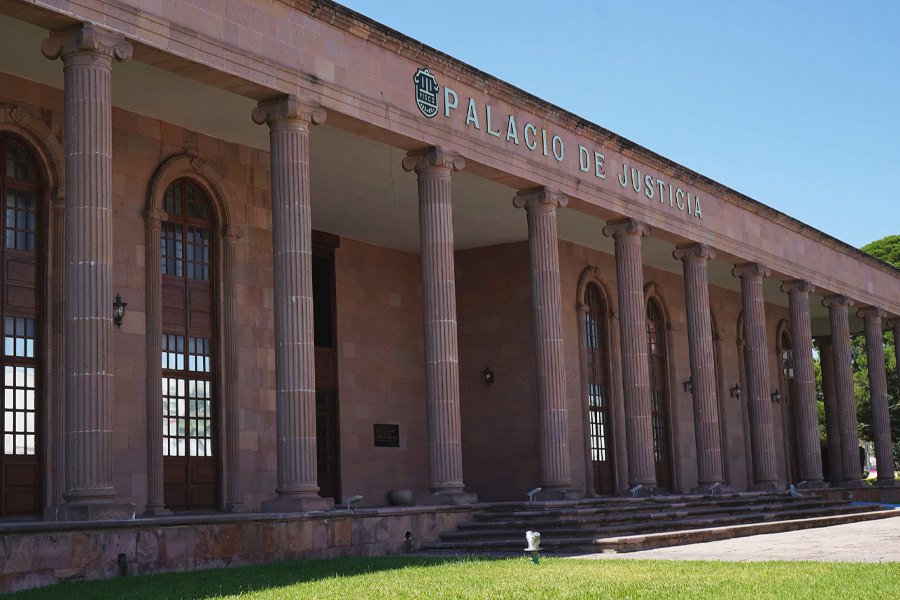

CENTRAMOS NUESTROS ESFUERZOS EN MEJORAR LOS PROCESOS MEDIANTE UNA REVISIÓN Y ACTUALIZACIÓN CONSTANTE, LO CUAL NOS HA PERMITIDO DESTACAR EN EVALUACIONES NACIONALES Y COMPARTIR EL CONOCIMIENTO Y MODELO CON OTROS PODERES JUDICIALES DEL PAÍS
Para garantizar el derecho de acceso a la justicia a las y los coahuilenses, centramos nuestros esfuerzos en mantener y mejorar los procesos que definen nuestras actividades. La función jurisdiccional debe ofrecerse con calidad y siempre enfocada en la mejora continua, por medio de la revisión y la actualización de la forma en que realizamos nuestro trabajo.
En este apartado damos cuenta de las acciones llevadas a cabo en el rubro de calidad, reseñamos los logros alcanzados con la implementación de los sistemas desarrollados, y describimos la actuación de los órganos de apoyo a la función jurisdiccional como las Centrales de Actuarios, la Oficialía Común de Partes y el Archivo Judicial General.
Mencionamos además los datos estadísticos producto del trabajo de los órganos jurisdiccionales de primera y segunda instancia del Poder Judicial, los cuales son el vínculo con la ciudadanía y reflejan nuestra función primordial: la administración de justicia.
Asimismo, informamos sobre la rendición de cuentas, los recursos financieros recibidos y su debida utilización, y la generación del Presupuesto Basado en Resultados, el cual nos permite destinar el ingreso financiero a los proyectos que nos propusimos.
CALIDAD EN LOS SERVICIOS PROPORCIONADOS
Motivados por ofrecer a las y los coahuilenses servicios bajo los principios de honestidad, ética, imparcialidad, transparencia y rendición de cuentas, trabajamos día con día en la mejora continua tanto en nuestros procesos como en propiciar la formación y capacitación de las personas que se desempeñan dentro del Poder Judicial, fortaleciendo de esta forma el sentido de pertenencia.
Por medio de la Coordinación de Calidad del Instituto Estatal de Defensoría Pública, medimos el cumplimiento de la política interna al monitorear y analizar la forma en que el personal de esa instancia brinda los servicios que proporciona, para posteriormente facilitar la toma de decisiones que impliquen una mejora en el desarrollo de sus funciones.
El sistema de calidad interno es documentado con manuales de gestión, instructivos de trabajo y documentos que especifican los servicios y describen los criterios de cada proceso, así como formatos controlados para generar evidencia de la labor realizada por cada servidor público.
Con el uso de un instrumento de medición aplicado a una muestra de usuarias y usuarios, este año los servicios proporcionados por el Instituto de Defensoría Pública obtuvieron un grado de satisfacción de 96.19 por ciento.
De igual forma, el trabajo que efectuamos durante el año a través del Centro de Evaluación Psicosocial fue evaluado mediante un sondeo sobre la calidad en el servicio, aplicado a las y los usuarios, obteniendo 98 por ciento de satisfacción en esa herramienta.
SISTEMA INTEGRAL DE CALIDAD Y GESTIÓN DOCUMENTAL
Mediante el desarrollo del Sistema Integral de Calidad y Gestión Documental (SICGD), iniciamos la ruta para estandarizar procesos, establecer parámetros de medición y control, e identificar riesgos, así como establecer objetivos y metas claras para obtener la certificación internacional en las normas ISO 9001:2015 e ISO 30301:2019, a fin de que la función que se desempeña al interior del Poder Judicial sea de calidad. Dicho sistema, único en su tipo, es el encargado de sustituir todo el control de documentos en papel por uno digital.
En ese entendido, y en la búsqueda de una transformación institucional para brindar a los usuarios un mejor servicio, pusimos en operación una plataforma web para el SICGD que nos facilita llevar a cabo el control documental requerido por las normas internacionales.
Esta herramienta permite la administración digital del sistema, lo que se traduce en la optimización de recursos y en brindar un acceso inmediato y un proceso de actualización muy ágil. Además, las áreas operativas que integran la primera etapa a certificar, como la Central de Actuarios, las Oficialías de Partes y el Archivo Judicial General, así como las áreas que convergen con estas, han documentado sus procesos para que de forma estandarizada se lleven a cabo las acciones por parte del personal involucrado y se ofrezca a los usuarios un mejor servicio.
Asimismo, durante 2022 se dio continuidad a la capacitación del personal en relación a la identificación de riesgos y oportunidades de cada uno de los procesos clave, concluyendo en un plan de atención para cada uno de ellos. De esta forma se determinan las medidas administrativas y de control que permiten contar con las herramientas necesarias para brindar, en todo momento y ante cualquier eventualidad, el servicio de impartición de justicia.
Para la implementación de las normas ISO 9001:2015 e ISO 30301:2019 es importante plantear las bases de un sistema de calidad acorde a los requerimientos establecidos, para que a través de procesos generalizados se garantice el correcto funcionamiento interno de la institución.
El objetivo de este sistema de calidad no debe ser únicamente la medición de manera objetiva de los procedimientos cuantitativos y cualitativos aplicables al Poder Judicial, sino asegurar la satisfacción de los empleados y de los usuarios a la hora de realizar sus labores o recibir el servicio de impartición de justicia.
Con la finalidad de instaurar los métodos establecidos por las normas de forma óptima y conseguir el objetivo planteado con la creación del SICGD, en 2022 dimos continuidad a los trabajos de análisis, capacitación y aplicación de técnicas determinadas para que, en consonancia con la política de calidad establecida, se obtenga de manera favorable su certificación y se demuestre el nivel de calidad que este poder público ofrece.
El compromiso de proporcionar un servicio de calidad en la implementación de justicia continúa en marcha, y por ello trabajamos en los requisitos establecidos por las normas ISO 9001:2015 e ISO 30301:2019, para que en un futuro próximo se obtenga favorablemente la certificación.
En consecuencia, seguimos centrando nuestros esfuerzos para que la justicia en Coahuila sea impartida a través de procesos operativos estandarizados, que cumplan con el objetivo de mejora y control que establecen los más altos estándares internacionales.
OFICIALÍAS DE PARTES
Las Oficialías de Partes del Poder Judicial representan un apoyo determinante en el desempeño de la función jurisdiccional, toda vez que a través de ellas recibimos y capturamos la documentación dirigida a los juzgados y tribunales en el estado, como son los escritos de demanda o todos aquellos que inician un procedimiento judicial en materia civil, mercantil y familiar, escritos de término presentados fuera del horario de los juzgados de primera instancia o tribunales en las materias mencionadas, y también en materia penal.
Además, en las Oficialías de Partes recibimos exhortos, rogatorias, requisitorias y despachos de asuntos civiles, mercantiles y familiares; solicitudes de auxilio por parte de los tribunales federales o jueces y tribunales en el estado y otras autoridades; escritos que acompañan a las demandas de amparo directo; y agravios y solicitudes de medidas cautelares, medidas preparatorias y procedimientos no contenciosos.
Continuamos con la operación del Buzón Electrónico de Demandas y Promociones (BEDP), con el que facilitamos y agilizamos significativamente la presentación de demandas y documentos, y también optimizamos el registro y envío de estos. Mantenemos un servicio de recepción electrónica las 24 horas, que otorga la certeza de que los documentos se recibieron oficialmente.
Durante el año de 2022, a través de las Oficialías de Partes de los distritos judiciales de Monclova, Río Grande, Saltillo y Torreón, recibimos 54 mil 740 demandas iniciales, 373 mil 163 promociones y cuatro mil 392 exhortos.
Tabla 15. Actividades Oficialías de Partes del Poder Judicial del Estado de Coahuila de Zaragoza
| Distrito Judicial | Demandas Iniciales | Promociones | Exhortos |
|---|---|---|---|
| Monclova | 8086 | 58926 | 750 |
| Río Grande | 3407 | 18257 | 397 |
| Saltillo | 22102 | 152999 | 1941 |
| Torreón | 21145 | 142981 | 1304 |
| Total | 54740 | 373163 | 4392 |
Fuente: Oficialías de Partes del Poder Judicial del Estado de Coahuila de Zaragoza. 2022.
CENTRAL DE ACTUARIOS
En atención a los principios de legalidad, imparcialidad, objetividad y certeza jurídica, a través de las Centrales de Actuarios del Poder Judicial del Estado hemos logrado un desempeño más profesional y eficiente con la capacitación continua de nuestro personal y la incorporación y desarrollo de tecnologías de la información, lo cual se refleja en una mejor atención a las y los usuarios, la organización aleatoria y el control de las diligencias ordenadas por los órganos jurisdiccionales en el estado.
Entre las acciones con las que continuamos para brindar servicios de calidad y eficientes se encuentran la operación de un software propio para la administración de diligencias entre los actuarios, el Sistema de Boletas Electrónicas de Gestión Actuarial (BEGA) y el aprovechamiento de herramientas de comunicación como WhatsApp, para dar a conocer a los usuarios información sobre sus citas.
Asimismo, durante este año incorporamos a la función actuarial asuntos provenientes de los juzgados en materia civil-hipotecaria, y juzgados letrados civiles a la Central de Actuarios del Distrito Judicial de Saltillo.
Por lo tanto, en 2022 diligenciamos 14 mil 602 boletas en la Central de Actuarios del Distrito Judicial de Saltillo; y en lo que corresponde a la Central de Actuarios del Distrito Judicial de Torreón, se diligenciaron un total de 10 mil 356 boletas.
ARCHIVO JUDICIAL GENERAL
La recepción, depósito, resguardo, conservación y clasificación de la documentación y expedientes de la estructura judicial, no jurisdiccional y administrativa de este poder público está a cargo del Archivo Judicial General, órgano que cuenta con una oficina general localizada en Saltillo así como sedes regionales en los distritos judiciales de Acuña, Monclova, Región Carbonífera, Río Grande y Torreón.
Durante el año 2022 continuamos con la atención al Sistema Integral de Búsqueda de Expedientes y Digitalización (SIBED). A solicitud de los órganos jurisdiccionales de primera instancia, les remitimos 20 mil 884 expedientes y recibimos por parte de ellos 88 mil 600 expedientes para su debido resguardo. Asimismo, expedimos 79 mil 35 copias simples y 23 mil 234 copias certificadas, además de atender oportunamente 14 mil 261 consultas.
Tabla 16. Actividad del Archivo Judicial General del Poder Judicial, por Distrito Judicial
| Distrito Judicial | Expedientes remitidos por los Juzgados | Expedientes remitidos a los Juzgados | Consultas | Expedición de Copias Simples | Expedición Copias Certificadas |
|---|---|---|---|---|---|
| Acuña | 9887 | 3686 | 1716 | 2197 | 3217 |
| Monclova | 7313 | 1971 | 1741 | 28493 | 1250 |
| Región Carbonífera | 8049 | 2894 | 6994 | 36196 | 8850 |
| Río Grande | 8449 | 902 | 403 | 0 | 2258 |
| Saltillo | 28979 | 6240 | 3339 | 12149 | 7659 |
| Torreón | 25923 | 5191 | 68 | 0 | 0 |
| Total | 88600 | 20884 | 14261 | 79035 | 23234 |
Fuente: Archivo General del Poder Judicial del Estado Coahuila de Zaragoza. 2022.
Este año, instalamos la Comisión Interdisciplinaria de Archivos y realizamos cuatro sesiones ordinarias en las cuales se presentó el Programa Anual de Desarrollo Archivístico, el proyecto de visitas judiciales a Archivos Judiciales Locales, el proyecto de designación de Enlaces de Gestión Documental por cada unidad administrativa, jurisdiccional y no jurisdiccional y el proyecto de expurgo, depuración y reciclaje de documentación administrativa de las diferentes áreas del Poder Judicial del Estado.
En seguimiento a este programa logramos la depuración de 5.5 toneladas de documentos correspondientes al Instituto de Especialización Judicial, del Centro de Evaluación Psicosocial, Defensoría Pública así como de diversas áreas administrativas de este poder público.
Entre otras acciones, implementamos el Nuevo Modelo de Archivo Único en los distritos judiciales de Acuña y Región Carbonífera, para agilizar la consulta de expedientes y la expedición de copias tanto simples como certificadas.
En colaboración con el Poder Judicial del Estado de Nuevo León, en septiembre, organizamos el evento Archivos de un solo Estado, Coahuila y Nuevo León 1857-1864, en el cual expusimos 12 expedientes judiciales resguardados en nuestro acervo histórico, que muestran la actuación jurisdiccional de la anexión de ambas entidades federativas, para conformar un solo estado. Además, en diciembre, efectuamos una segunda etapa de dicha muestra archivística en el Museo de la Revolución Mexicana y el Casino de Satillo, en la cual contamos con la asistencia entre otras autoridades del Doctor Ricardo Alfredo Sodi Cuellar, Coordinador de la Red Nacional de Archivos Judiciales de la CONATRIB y Presidente del Tribunal Superior de Justicia del Estado de México; de la Maestra Maribel Flores Garza, Magistrada de la Tercera Sala Unitaria Familiar del Tribunal Superior de Justicia del Estado de Nuevo León, así como con la participación del Maestro Héctor Jaime Treviño, Director del Archivo General del Estado de Nuevo León; del Maestro Lucas Martínez Sánchez, Director del Archivo General del Estado de Coahuila de Zaragoza y del Doctor Octavio Herrera Pérez, catedrático de la Universidad Autónoma de Tamaulipas, en la exposición sobre el contexto histórico de dicho periodo.
Por otra parte, realizamos la asamblea de invierno de la Asociación Noreste de Archivos, en la cual se entregaron reconocimientos al mérito y trayectoria archivística y de conformidad con el marco jurídico del Archivo General de la Nación, en diciembre, obtuvimos la constancia de inscripción al Registro Nacional de Archivos, en el que se reconocen los archivos judiciales en trámite, el de concentración y el histórico.
ESTADÍSTICA JURISDICCIONAL
Es a través de la Secretaría Técnica y de Transparencia mediante la Unidad de Evaluación y Estadística, que compilamos y analizamos la información estadística derivada de los órganos jurisdiccionales y no jurisdiccionales y en coordinación con la Visitaduría Judicial General, nos posibilita dar cuenta, registrar y poner a disposición los datos que aportan los mismos órganos.
A continuación presentamos la información cuantitativa que refleja el trabajo en los órganos jurisdiccionales que conforman el Poder Judicial del Estado de Coahuila de Zaragoza, tanto de sus órganos colegiados como juzgados de primera instancia así como la materia de los asuntos que conocen.
JUSTICIA EN LOS TRIBUNALES DE ALZADA
El Tribunal Superior de Justicia del Estado de Coahuila de Zaragoza está constituido por órganos colegiados que conocen y resuelven los recursos de apelación presentados en contra de las resoluciones formuladas por los juzgados de primera instancia, según la materia especializada, además de emitir jurisprudencias y dictaminar sobre excusas o recusaciones. Así, en la entidad contamos con la Sala Colegiada Civil y Familiar, la Sala Colegiada Penal y la Sala Regional con sede en Torreón.
El trabajo realizado por las Salas Colegiadas del Tribunal Superior de Justicia en este año se describe en la siguiente tabla:
Tabla 17. Labores de la Sala Colegiada Civil y Familiar, Sala Colegiada Penal y Sala Regional
| Rubro | Sala Colegiada Civil y Familiar | Sala Colegiada Penal | Sala Regional |
|---|---|---|---|
| Asuntos recibidos en 2022 | 281 | 147 | 258 |
| Asuntos resueltos / concluidos | 339 | 151 | 266 |
| Asuntos en trámite a la fecha | 241 | 5 | 22 |
| Sentencias pronunciadas | 300 | 144 | 281 |
| Audiencias celebradas | 1578 | 81 | 32 |
Fuente: Secretaría Técnica y de Transparencia de la Presidencia del Tribunal Superior de Justicia del Estado de Coahuila de Zaragoza. Poder Judicial del Estado de Coahuila de Zaragoza. 2022.
JUSTICIA EN EL TRIBUNAL DE CONCILIACIÓN Y ARBITRAJE
El Tribunal de Conciliación y Arbitraje es el órgano especializado que, en su función jurisdiccional, conoce y resuelve los conflictos laborales individuales y colectivos suscitados entre las dependencias del Estado, las dependencias municipales y los órganos autónomos.
La actividad judicial realizada por el Tribunal de Conciliación y Arbitraje durante la anualidad 2022 se desglosa a continuación:
Tabla 18. Labores del Tribunal de Conciliación y Arbitraje
| Rubro | Cantidad |
|---|---|
| Asuntos atendidos | 3207 |
| Asuntos en trámite al inicio de 2022 | 2423 |
| Asuntos recibidos | 784 |
| Asuntos concluidos por laudo | 552 |
| Trámite a la fecha | 2655 |
| Sentencias pronunciadas | 364 |
| Diligencias actuariales | 3099 |
Fuente: Secretaría Técnica y de Transparencia de la Presidencia del Tribunal Superior de Justicia del Estado de Coahuila de Zaragoza. Poder Judicial del Estado de Coahuila de Zaragoza. 2022.

JUSTICIA EN LOS TRIBUNALES DISTRITALES
El Poder Judicial del Estado de Coahuila de Zaragoza dispone de cuatro Tribunales Distritales, los cuales son los órganos encargados de conocer de los recursos de apelación y queja que se suscitan en contra de autos y sentencias interlocutorias, decretadas por las y los juzgadores de primera instancia.
Estos se encuentran instalados en las sedes judiciales de mayor concentración poblacional, como son Monclova, Piedras Negras, Saltillo y Torreón.
Tabla 19. Actividades en los Tribunales Distritales
| Rubro | Primer Tribunal Distrital | Segundo Tribunal Distrital | Tercer Tribunal Distrital | Cuarto Tribunal Distrital |
|---|---|---|---|---|
| Asuntos atendidos | 913 | 1178 | 63 | 159 |
| Asuntos en trámite al inicio de 2022 | 320 | 559 | 53 | 12 |
| Asuntos recibidos | 637 | 639 | 270 | 131 |
| Asuntos concluidos / resueltos | 522 | 495 | 13 | 151 |
| Trámite a la fecha | 391 | 683 | 50 | 8 |
| Sentencias pronunciadas | 377 | 376 | 205 | 111 |
| Diligencias actuariales | 4196 | 1376 | 1580 | 217 |
Fuente: Secretaría Técnica y de Transparencia de la Presidencia del Tribunal Superior de Justicia del Estado de Coahuila de Zaragoza. Poder Judicial del Estado de Coahuila de Zaragoza. 2022.
LABORES DE LOS JUZGADOS DE PRIMERA INSTANCIA
Para el logro de una justicia cercana es necesario conocer y analizar los datos que derivan del trabajo de los administradores de justicia, tarea que abona a la identificación de áreas de oportunidad y ayuda a precisar acciones para mejorar la cobertura y el desempeño de nuestra función.
Ante la cantidad de asuntos hipotecarios registrada en los juzgados civiles, a partir de este año los expedientes relativos a este rubro son atendidos por dos juzgados especializados.
Asimismo, en cumplimiento a la reforma constitucional en la materia, iniciamos las actividades de seis Tribunales Laborales.
De esta manera, durante 2022 los Órganos Jurisdiccionales de Primera Instancia que integran el Poder Judicial atendieron una carga de trabajo de 245 mil 053 asuntos en las materias familiar, civil, mercantil, laboral y penal.
Informamos que estos órganos de primera instancia desahogaron 30 por ciento de la carga de trabajo
Enseguida desagregamos la actividad de los Órganos Jurisdiccionales de Primera Instancia por materia en que se especializan:
Tabla 20. Actividades en Materia Civil
| Rubro | Cantidad |
|---|---|
| Asuntos atendidos | 44006 |
| Asuntos en trámite al inicio de 2022 | 30608 |
| Asuntos recibidos | 9230 |
| Regresaron a trámite | 4168 |
| Trámite a la fecha | 35387 |
| Asuntos desahogados | 8619 |
| Sentencias emitidas | 2406 |
| Acuerdos pronunciados | 143031 |
| Diligencias actuariales | 42035 |
| Medios de auxilio judicial (exhortos, despachos, requisitorias, encomiendas) | 2063 |
| Convenios | 118 |
| Audiencias celebradas | 7183 |
Fuente: Secretaría Técnica y de Transparencia de la Presidencia del Tribunal Superior de Justicia del Estado de Coahuila de Zaragoza. Poder Judicial del Estado de Coahuila de Zaragoza. 2022.
Tabla 21. Actividades en Materia Civil-Hipotecaria
| Rubro | Cantidad |
|---|---|
| Asuntos atendidos | 3999 |
| Asuntos en trámite al inicio de 2022 | 741 |
| Asuntos recibidos | 3258 |
| Regresaron a trámite | 0 |
| Trámite a la fecha | 3332 |
| Asuntos desahogados | 667 |
| Sentencias emitidas | 388 |
| Acuerdos pronunciados | 8604 |
| Diligencias actuariales | 1737 |
| Medios de auxilio judicial (exhortos, despachos, requisitorias, encomiendas) | 56 |
| Convenios | 12 |
| Audiencias celebradas | 196 |
Fuente: Secretaría Técnica y de Transparencia de la Presidencia del Tribunal Superior de Justicia del Estado de Coahuila de Zaragoza. Poder Judicial del Estado de Coahuila de Zaragoza. 2022.
Tabla 22. Actividades en Materia Familiar bajo el Sistema Tradicional
| Rubro | Cantidad |
|---|---|
| Asuntos atendidos | 8453 |
| Asuntos en trámite al inicio de 2022 | 4723 |
| Asuntos recibidos | 296 |
| Regresaron a trámite | 3434 |
| Trámite a la fecha | 5136 |
| Asuntos desahogados | 3370 |
| Sentencias emitidas | 80 |
| Acuerdos pronunciados | 31085 |
| Diligencias actuariales | 10177 |
| Medios de auxilio judicial (exhortos, despachos, requisitorias, encomiendas) | 41 |
| Convenios | 105 |
| Audiencias celebradas | 1203 |
Fuente: Secretaría Técnica y de Transparencia de la Presidencia del Tribunal Superior de Justicia del Estado de Coahuila de Zaragoza. Poder Judicial del Estado de Coahuila de Zaragoza. 2022.
Tabla 23. Actividades en Materia Familiar Oral
| Rubro | Cantidad |
|---|---|
| Asuntos atendidos | 66657 |
| Asuntos en trámite al inicio de 2022 | 40091 |
| Asuntos recibidos | 21602 |
| Regresaron a trámite | 4960 |
| Trámite a la fecha | 45791 |
| Asuntos desahogados | 20866 |
| Sentencias emitidas | 10174 |
| Acuerdos pronunciados | 183923 |
| Diligencias actuariales | 85280 |
| Medios de auxilio judicial (exhortos, despachos, requisitorias, encomiendas) | 2975 |
| Convenios | 1408 |
| Audiencias celebradas | 9746 |
Fuente: Secretaría Técnica y de Transparencia de la Presidencia del Tribunal Superior de Justicia del Estado de Coahuila de Zaragoza. Poder Judicial del Estado de Coahuila de Zaragoza. 2022.
Tabla 24. Actividades en los Tribunales Laborales
| Rubro | Cantidad |
|---|---|
| Asuntos atendidos | 366 |
| Asuntos en trámite al inicio de 2022 | 0 |
| Asuntos recibidos | 366 |
| Regresaron a trámite | 0 |
| Trámite a la fecha | 290 |
| Asuntos desahogados | 76 |
| Sentencias pronunciadas | 1 |
| Acuerdos pronunciados | 285 |
| Diligencias actuariales | 413 |
| Medios de auxilio judicial (exhortos, despechos, requisitorias, encomiendas) | 29 |
| Convenios | 2 |
| Audiencias celebradas | 1 |
Fuente: Secretaría Técnica y de Transparencia de la Presidencia del Tribunal Superior de Justicia del Estado de Coahuila de Zaragoza. Poder Judicial del Estado de Coahuila de Zaragoza. 2022.
Tabla 25. Actividades en Materia Mercantil
| Rubro | Cantidad |
|---|---|
| Asuntos atendidos | 92433 |
| Asuntos en trámite al inicio de 2022 | 60664 |
| Asuntos recibidos | 29442 |
| Regresaron a trámite | 2347 |
| Trámite a la fecha | 67593 |
| Asuntos desahogados | 24860 |
| Sentencias emitidas | 6120 |
| Acuerdos pronunciados | 209493 |
| Diligencias actuariales | 39923 |
| Medios de auxilio judicial (exhortos, despachos, requisitorias, encomiendas) | 1867 |
| Convenios | 414 |
| Audiencias celebradas | 10303 |
Fuente: Secretaría Técnica y de Transparencia de la Presidencia del Tribunal Superior de Justicia del Estado de Coahuila de Zaragoza. Poder Judicial del Estado de Coahuila de Zaragoza. 2022.
Tabla 26. Actividades en Materia Penal bajo el Sistema Tradicional
| Rubro | Cantidad |
|---|---|
| Asuntos atendidos | 895 |
| Asuntos en trámite al inicio de 2022 | 701 |
| Asuntos recibidos | 0 |
| Regresaron a trámite | 194 |
| Trámite a la fecha | 560 |
| Asuntos desahogados | 272 |
| Sentencias emitidas | 44 |
| Acuerdos pronunciados | 5136 |
| Diligencias actuariales | 6682 |
| Medios de auxilio judicial (exhortos, despachos, requisitorias, encomiendas) | 300 |
| Convenios | 0 |
| Audiencias celebradas | 282 |
Fuente: Secretaría Técnica y de Transparencia de la Presidencia del Tribunal Superior de Justicia del Estado de Coahuila de Zaragoza. Poder Judicial del Estado de Coahuila de Zaragoza. 2022.
Tabla 27. Actividades en Materia Penal del Sistema Acusatorio y Oral
| Rubro | Cantidad |
|---|---|
| Causas atendidas | 16859 |
| Causas en trámite al inicio de 2022 | 3495 |
| Causas ingresadas | 11154 |
| Regresaron a trámite | 2210 |
| Trámite a la fecha | 5681 |
| Causas concluidas | 11178 |
| Audiencias desahogadas | 22577 |
| Acuerdos pronunciados | 40350 |
| Diligencias actuariales | 76429 |
| Medios de auxilio judicial recibidos (exhortos, despachos, requisitorias, encomiendas) | 3718 |
Fuente: Secretaría Técnica y de Transparencia de la Presidencia del Tribunal Superior de Justicia del Estado de Coahuila de Zaragoza. Poder Judicial del Estado de Coahuila de Zaragoza. 2022.
Tabla 28. Actividad en los Juzgados Especializados en Violencia Familiar contra la Mujer. Materia Penal
| Rubro | Cantidad |
|---|---|
| Causas atendidas | 2669 |
| Causas en trámite al inicio de 2022 | 452 |
| Causas ingresadas | 1782 |
| Regresaron a trámite | 435 |
| Trámite a la fecha | 905 |
| Causas concluidas | 1764 |
| Audiencias desahogadas | 4372 |
| Acuerdos pronunciados | 4958 |
| Diligencias actuariales | 12736 |
| Medios de auxilio judicial recibidos (exhortos, despachos, requisitorias, encomiendas) | 90 |
Fuente: Secretaría Técnica y de Transparencia de la Presidencia del Tribunal Superior de Justicia del Estado de Coahuila de Zaragoza. Poder Judicial del Estado de Coahuila de Zaragoza. 2022.
Tabla 29. Actividad en los Juzgados Especializados en Violencia Familiar contra la Mujer. Materia Familiar
| Rubro | Cantidad |
|---|---|
| Asuntos atendidos | 1676 |
| Asuntos en trámite al inicio de 2022 | 814 |
| Asuntos recibidos | 862 |
| Regresaron a trámite | 0 |
| Trámite a la fecha | 1384 |
| Asuntos desahogados | 475 |
| Sentencias emitidas | 77 |
| Acuerdos pronunciados | 6909 |
| Diligencias actuariales | 17130 |
| Medios de auxilio judicial (exhortos, despachos, requisitorias, encomiendas) | 7 |
| Convenios | 162 |
| Audiencias celebradas | 551 |
Fuente: Secretaría Técnica y de Transparencia de la Presidencia del Tribunal Superior de Justicia del Estado de Coahuila de Zaragoza. Poder Judicial del Estado de Coahuila de Zaragoza. 2022.
Tabla 30. Actividad en los Juzgados de Ejecución
| Rubro | Cantidad |
|---|---|
| Causas atendidas | 7040 |
| Causas en trámite al inicio de 2022 | 314 |
| Causas ingresadas | 1694 |
| Trámite a la fecha | 2641 |
| Causas concluidas | 251 |
| Audiencias desahogadas | 707 |
| Acuerdos pronunciados | 6631 |
Fuente: Secretaría Técnica y de Transparencia de la Presidencia del Tribunal Superior de Justicia del Estado de Coahuila de Zaragoza. Poder Judicial del Estado de Coahuila de Zaragoza. 2022.
RESULTADOS EN LA CONSOLIDACIÓN DEL SISTEMA DE JUSTICIA PENAL ACUSATORIO Y ORAL EN COAHUILA
Continuamos dirigiendo acciones para fortalecer la operación de la materia penal en nuestra entidad, y este año resaltamos las que enseguida se describen.
Con el acompañamiento de la Agencia de los Estados Unidos para el Desarrollo Internacional (USAID), a través del Programa ConJusticia, llevamos a cabo un plan de trabajo focalizado en el Distrito Judicial de Torreón e iniciamos el proyecto de Alineación Estratégica en dicha demarcación. El objetivo de esta actividad es la integración de los equipos de segunda y primera instancia, así como de gestión judicial, los cuales trabajarán de manera homologada y coordinada en la recopilación y manejo de datos.
Derivado de estos trabajos, efectuamos la instalación del Comité de Jueces en ese distrito judicial, el cual permitirá el intercambio de experiencias y opiniones tanto entre juzgadoras y juzgadores como del personal del área de administración, para estandarizar los criterios de operación de los órganos jurisdiccionales en la materia.
Asimismo, realizamos un conversatorio con personal de la Fiscalía General del Estado mediante el cual detectamos áreas de oportunidad y establecimos estrategias conjuntas para hacer más eficiente nuestro trabajo, y garantizar así un efectivo acceso a la justicia.
Finalmente, en el marco de las actividades realizadas en el Distrito Judicial de Torreón, desarrollamos un modelo de agenda que cubre las particularidades de ese distrito y organizamos una mesa de trabajo asesorada por la USAID, para el intercambio de criterios entre personas juzgadoras y magistrados.
En cumplimiento a las recomendaciones del Programa ConJusticia, revisamos y mejoramos la herramienta de gestión de audiencias con el objetivo de detectar el número y los motivos de diferimiento, y optimizar su programación, entre otras acciones.
Participamos en el primer intercambio interestatal de buenas prácticas, en el cual compartimos con los poderes judiciales de los estados de Sonora y San Luis Potosí el Modelo Especializado en Violencia Familiar, y las audiencias concentradas. Como resultado de estas reuniones resalta la realización de la primera audiencia concentrada, el 27 de octubre de este año, en el Centro de Justicia Penal de Hermosillo, Sonora.
En lo que respecta al Distrito Judicial de Monclova, efectuamos el diagnóstico del Modelo de Agendamiento, con la finalidad de iniciar en fechas próximas el Programa de Fortalecimiento Institucional del Sistema de Justicia Penal en esa demarcación.
Visitamos el estado de Querétaro en donde fue expuesto al Presidente del Tribunal Superior de Justicia, Magistrado Miguel Felipe Mery Ayup, y al Fiscal General del Estado, Gerardo Márquez Guevara, el modelo de gestión interinstitucional Cosmos, que consta de un sistema informático único compartido por todos los operadores del Sistema de Justicia Penal Acusatorio en aquella entidad. De esta visita derivaron los trabajos para la formulación de la Ley de Coordinación del Sistema Penal, acción conjunta con la Fiscalía General del Estado y la Consejería Jurídica del Estado.
Iniciamos también la asistencia técnica para el fortalecimiento de la Unidad de Gestión Judicial, mediante el desarrollo de una herramienta tecnológica que permite la automatización del registro de información que se obtiene en la sala de audiencias.
En octubre se dio a conocer el documento “Hallazgos desde lo local 2021”, publicado por la asociación civil México Evalúa. Dicha publicación tiene como propósito evaluar el fortalecimiento de la operación del sistema de justicia penal en los estados. Entre los resultados publicados, destaca que por segundo año consecutivo el Poder Judicial de Coahuila obtuvo el tercer lugar en el ranking nacional denominado Consolidación del Sistema de Justicia Penal; así como la quinta posición en judicialización de casos y el segundo lugar de judicialización en flagrancia. Y además obtuvimos el primer lugar nacional en el Índice de Confianza Ciudadana, en el que los jueces penales de la entidad fueron ubicados como las autoridades con mayor confianza, entre las mencionadas en la encuesta.
Asimismo, el estudio resalta la implementación por parte de este Poder Judicial de las audiencias concentradas, las herramientas digitales con las que contamos y la instrumentación de un sistema de gestión para el agendamiento de audiencias, así como la puesta en funcionamiento de los Juzgados Especializados en Violencia Familiar contra la Mujer.

Para finalizar, con el propósito de garantizar el derecho de acceso a la justicia y el derecho al debido proceso, en noviembre, mediante el acuerdo C-140/20, el Consejo de la Judicatura aprobó la implementación general de los Tribunales de Enjuiciamiento de forma unitaria, lo cual permite eficientar el recurso humano con el que contamos y de esta manera llevar a cabo juicios orales con mayor agilidad
RECURSOS FINANCIEROS
Administramos, controlamos y distribuimos de manera planeada los recursos económicos con que cuenta el Poder Judicial a través de la Dirección de Recursos Financieros, la cual es la unidad responsable de rendir los informes que sustentan la transparencia en la aplicación del gasto.
Aplicamos nuestro presupuesto con eficiencia al gestionarlo de manera óptima, destinándolo al cumplimiento del pago de la nómina del personal en activo y pensionados, a la adquisición de materiales y suministros, y a la solventación de servicios y arrendamientos, entre otros requerimientos económicos.
PRESUPUESTO
Para el año 2022, el Congreso del Estado nos autorizó un presupuesto de 900 millones de pesos, a los que se le adicionaron 28.9 millones de pesos de ingresos propios, correspondientes a las tarifas autorizadas en la Ley de Hacienda, intereses y cauciones, entre otros.
Asimismo, este año recibimos recursos federales por el orden de 24.8 millones de pesos para la implementación de la reforma laboral en la entidad.
En este ejercicio anual implementamos medidas de austeridad y racionalidad del gasto, lo que nos implicó realizar ampliaciones y reducciones al presupuesto mediante movimientos compensados, con el fin de cumplir los objetivos y metas planteadas, por lo que al 30 de noviembre se devengaron recursos por 928 millones 988 mil 500 pesos, aplicados en los rubros de inversión pública, bienes inmuebles e intangibles, transferencias, asignaciones, subsidios y otras ayudas, servicios generales, materiales y suministros, así como en servicios personales.

EVALUACIONES DE LA AUDITORÍA SUPERIOR
Como ente fiscalizado por la Auditoría Superior del Estado, en el Informe de Evaluación del Proceso Presupuestal obtuvimos una calificación de 100 por ciento en el cumplimiento del proceso de composición, discusión, análisis y aprobación de los anteproyectos, proyectos y presupuestos definitivos.
Cumpliendo con la correcta integración, contenido y registro de los 27 elementos presupuestales, ocho de ellos correspondientes a ingresos y 19 a egresos, mismos que se clasifican en el apartado de Contabilidad Gubernamental, Disciplina Financiera, Legislación Local y Presupuesto Basado en Resultados.
PRESUPUESTO BASADO EN RESULTADOS
En lo que respecta al Proyecto de Presupuesto Basado en Resultados, por quinto año consecutivo la Auditoría Superior del Estado nos evaluó con el 100 por ciento en el cumplimiento de su integración, según los lineamientos que marcan la Ley General de Contabilidad Gubernamental, la Ley de Disciplina Financiera de las Entidades Federativas y los Municipios, la Ley Reglamentaria del Presupuesto de Egresos del Estado de Coahuila de Zaragoza y los Códigos Municipal y Financiero de los Municipios del Estado de Coahuila de Zaragoza.
La adopción de la metodología de Presupuesto Basado en Resultados y el Sistema de Evaluación al Desempeño Judicial (PbR-SED) nos facilita la adecuada administración del gasto de este poder público.
FONDO DE MEJORAMIENTO PARA LA ADMINISTRACIÓN DE JUSTICIA
El Fondo de Mejoramiento de la Administración de Justicia tiene como función resguardar y administrar los recursos materiales y económicos que por concepto de depósitos de cauciones, fianzas, garantías y multas establezcan las autoridades judiciales del estado y cualquier otro órgano del Tribunal Superior de Justicia con facultades para ello, mismo que es administrado y operado por el Consejo de la Judicatura.
El patrimonio de dicho fondo alcanzó la cantidad de 447.6 millones de pesos, monto que se encuentra en constante fluctuación por las entradas y salidas que cotidianamente se llevan a cabo por la propia naturaleza del recurso.
Del monto total que lo compone, 61.7 millones de pesos se contemplan dentro del rubro de cuentas por cobrar a largo plazo, pues están depositados en la institución financiera a la que le fue revocada su autorización de funcionamiento por las autoridades competentes, que determinaron la disolución y liquidación de la misma.